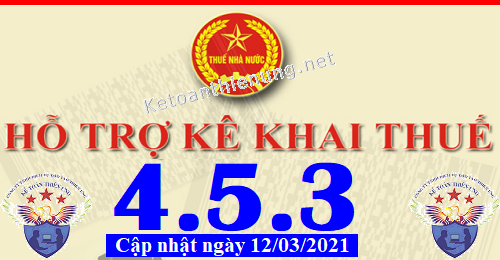
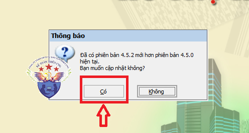
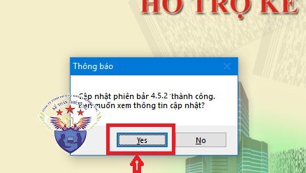

Phần mềm hỗ trợ kê khai thuế HTKK 4.5.3 mới nhất 2021 là Phần mềm HTKK 4.5.3 mới nhất ngày 12/03/2021 của Tổng cục thuế. Download phần mềm HTKK 4.5.3 miễn phí tại đây.
Ngày 12/03/2021 Tổng cục Thuế thông báo về việc Nâng cấp ứng dụng Hỗ trợ kê khai (HTKK) 4.5.3
TỔNG CỤC THUẾ THÔNG BÁO
V/v Nâng cấp ứng dụng Hỗ trợ kê khai (HTKK) phiên bản 4.5.3 cập nhật nghiệp vụ kê khai đáp ứng Nghị định số 126/2020/NĐ-CP
Tổng cục Thuế thông báo nâng cấp ứng dụng Hỗ trợ kê khai (HTKK) phiên bản 4.5.3 cập nhật các tờ khai 02/QTT-TNCN, 05/QTT-TNCN đáp ứng yêu cầu nghiệp vụ theo Nghị định số 126/2020/NĐ-CP ngày 19/10/2020 về quy định chi tiết một số điều của luật Quản lý thuế đồng thời cập nhật một số nội dung phát sinh trong quá trình triển khai HTKK 4.5.2, cụ thể như sau:
1. Cập nhật chức năng kê khai tờ khai 02/QTT-TNCN, 05/QTT-TNCN đáp ứng Nghị định số 126/2020/NĐ-CP
- Miễn thuế đối với trường hợp cá nhân có số tiền thuế phát sinh phải nộp hàng năm sau quyết toán thu nhập cá nhân từ tiền lương tiền công từ 50.000 đồng trở xuống
2. Cập nhật các nội dung phát sinh
2.1. Cập nhật tên cơ quan thuế đáp ứng Quyết định số 2357/QĐ-BTC ngày 31/12/2020 của Bộ Tài chính
- Chi cục Thuế thành huyện Phú Quốc thành Chi cục Thuế thành phố Phú Quốc trực thuộc Cục Thuế tỉnh Kiên Giang
2.2. Cập nhật tờ khai 02/QTT-TNCN
- Cập nhật lỗi tính sai chỉ tiêu [30] – Cho những người phụ thuộc được giảm trừ đối với trường hợp kê khai vắt năm từ năm 2019 – đến năm 2020 trong trường hợp thời gian giảm trừ gia cảnh cho người phụ thuộc không chỉ thuộc năm 2020.
2.3. Cập nhật tờ khai thuế thu nhập cá nhân (02/KK-TNCN)
- Cập nhật kiểm tra ràng buộc tại chỉ tiêu [25], [26] đáp ứng Nghị quyết 954/2020/UBTVQH14 đối với kỳ tính thuế thuộc năm 2020
+ Chỉ tiêu [25] – Giảm trừ cho bản thân: Số tiền giảm trừ cho bản thân là 11.000.000/người/tháng
+ Chỉ tiêu [26] – Giảm trừ cho người phụ thuộc: Số tiền giảm trừ cho người phụ thuộc là 4.400.000/người/tháng
2.4. Cập nhật tờ khai quyết toán thuế thu nhập doanh nghiệp (03/TNDN)
- Cập nhật lỗi in tờ khai 03/TNDN: Không hiển thị “Mã số thuế”, hiển thị sai “Hình thức quan hệ liên kết” tại Mục I - Phụ lục Thông tin về quan hệ liên kết và giao dịch liên kết theo Nghị định 132/2020/NĐ-CP
2.5. Cập nhật tờ khai thuế giá trị gia tăng (04/GTGT)
- Cập nhật chức năng in tờ khai 04/GTGT có tích chọn “Hoạt động thu hộ CQNN có thẩm quyền giao” thì hiển thị:
+ Chỉ tiêu "Tỷ lệ GTGT tại dòng hoạt động kinh doanh khác" hiển thị 10%
+ Chỉ tiêu [29] hiển thị công thức là: [29] = [28] x 10%
------------------------------------------------------------------------
Bắt đầu từ ngày 13/03/2021, khi lập hồ sơ khai thuế có liên quan đến nội dung nâng cấp nêu trên, tổ chức, cá nhân nộp thuế sẽ sử dụng các chức năng kê khai tại ứng dụng HTKK 4.5.3 thay cho các phiên bản trước đây.

----------------------------------------------------------------------------
Download Phần mềm HTKK 4.5.3 tại đây:

Để cài đặt được HTKK 4.5.3, máy tính của NNT cần đáp ứng thông số sau:
- Hệ điều hành WinXP (SP2, SP3), Win 7 trở lên… (không hỗ trợ hệ điều hành iOS, Mac).
- Máy tính có cài .NET Framework 3.5 trở lên (có thể tải bộ cài .NET Framework 3.5 tại đây).
- Nếu máy tính sử dụng hệ điều hành Win 7 trở lên không phải cài đặt .NET Framework 3.5 mà chỉ cần kích hoạt .NET Framework 3.5 đã tích hợp sẵn theo tài liệu hướng dẫn cài đặt tại đây
- Hệ điều hành WinXP (SP2, SP3), Win 7 trở lên… (không hỗ trợ hệ điều hành iOS, Mac).
- Máy tính có cài .NET Framework 3.5 trở lên (có thể tải bộ cài .NET Framework 3.5 tại đây).
- Nếu máy tính sử dụng hệ điều hành Win 7 trở lên không phải cài đặt .NET Framework 3.5 mà chỉ cần kích hoạt .NET Framework 3.5 đã tích hợp sẵn theo tài liệu hướng dẫn cài đặt tại đây
-----------------------------------------------------------------------------------------------
- Mọi phản ánh, góp ý của tổ chức, cá nhân nộp thuế được gửi đến cơ quan Thuế theo các số điện thoại, hộp thư điện tử hỗ trợ NNT về ứng dụng HTKK do cơ quan Thuế cung cấp.
Tổng cục Thuế trân trọng thông báo./.
-----------------------------------------------------------------------
Trường hợp: Máy tính các bạn đã cài phần mềm HTKK 4.5.2 rồi -> Các bạn chỉ cần Bật phần mềm HTKK 4.5.2 đó lên -> Phần mềm sẽ hiển thị Thông báo cập nhật lên Phần mềm HTKK 4.5.3 -> Các bạn bấm nút "Có"

-> Tiếp đó đợi phần mềm chạy cập nhật là xong nhé:

Như vậy là các bạn đã nâng cấp xong Phần mềm HTKK 4.5.3 nhé
------------------------------------------------------------------------